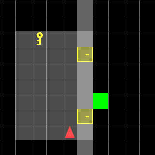
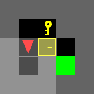
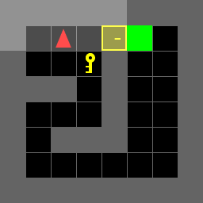

ECE 276B · DECISION MAKING
Door-Key Planning with Dynamic Programming
A grid-world robot must collect a key, unlock a door, and reach a goal across fixed and changing maps.

The project
The policy accounts for position, heading, key possession, and door state. For variable layouts, a larger state representation lets one policy handle multiple generated configurations.
How it works
- Model forward motion, turns, key pickup, and door unlocking as state transitions.
- Run value iteration to minimize cumulative action cost.
- Replay the resulting policies across fixed maps and 36 variable 10×10 maps.
See the evidence

